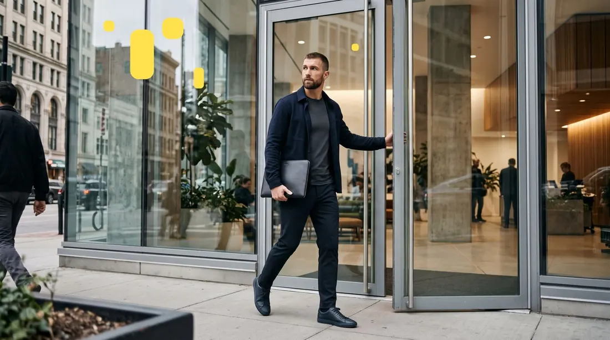
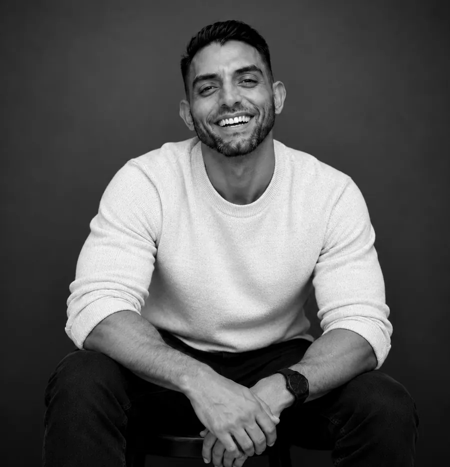

The intelligence
ŌLLIN OS
Finds it.
Spots the movement, runs four checks on every claim, and maps the whole account before your team takes a swing.
1 SIGNAL · VERIFIED60 DATA POINTS INTAP THE SIGNAL →
Not another AI sales tool
ŌLLIN finds the accounts showing movement, verifies why they matter, and maps the people worth reaching. Then it runs the outreach with you, one card at a time.
Real signals. Real people. Your call.
One product · two halves
Built as one system. A workspace without the intelligence is just another inbox.
The intelligence
Spots the movement, runs four checks on every claim, and maps the whole account before your team takes a swing.
The workspace
One card per contact with the evidence and a ready draft, plus the next touch already scheduled. A person hits Let's go.
How it works · the four checks
Every claim runs four checks and arrives with its source attached. Nothing to re-read, re-find, or second-guess.
A credible first-party or primary source.
Confirmed against an independent signal.
Checked against the current system of record.
Final audit before the intelligence reaches your team.
Passed all four. Shown to your team as verified, with the source attached.
The difference
Traditional sales intelligence
ŌLLIN
Mushroom · map the whole account
ŌLLIN starts with the person you found, then maps the buyers, blockers, influencers and operators around them. When one contact goes quiet, your team already knows where to go next.
One contact is the seed. ŌLLIN builds outward.
The people around them, not just more names.
Confirmed lines stay solid. Inferred ones are clearly marked.
Different roles care about different things.
Tap a personto see why they'd care.
ŌLLIN GO · where the work runs
GO is the workspace at go.ollinos.com. Your team reviews each card, adjusts it, and sends it from there.
Already a customer? Sign in at go.ollinos.com ↗
VP, Operations · Aldervane Freight
Running Operations at a company scaling a whole region means you're hiring for a team that doesn't exist yet, on a clock you didn't set…
ELY · talent redeployment
Same engine, run backwards. Start with the résumé, not the account. ŌLLIN finds live demand that fits, checks it, maps who owns the need, and drafts the pitch before your talent leaves payroll.
The candidate stays anonymous. The résumé is never forwarded.
Next seats found
Example data · not real candidates or roles

Human on the trigger
ŌLLIN does the research, the checking and the draft. Your team makes the call. The relationship was always yours.
of a seller's time goes to work that isn't selling.
Salesforce · State of Sales, 7th ed.a week spent searching, before admin takes 3.6 more.
Bullhorn · GRID 2026more likely to have grown revenue: firms running AI.
Bullhorn · GRID 2026“The AI is smart on this one, and the data it finds—and how it validates itself—this is one of a kind.”

Built by a seller
“Having spent over 10 years in staffing helping teams grow and scale, I look at AI through the lens of real people, real workflows, and real careers.”
A sales leader who has carried a number, coached reps and built teams. ŌLLIN is the research he used to do by hand, checked four times and put on one card.
Plans
ŌLLIN is the intelligence and the workspace, built to work as one. GO is available on its own, but then the research is on you.
The cards, drafts and sequencing, without the intelligence underneath.
Honest take: GO is built to run what OS finds. On its own it works, but most teams will want both.
The rules
Not guardrails we added. The way it was built.
Verifiable sources only. No made-up companies, people, or facts. Empty beats plausible.
A claim that fails a check is dropped, not hedged, not "likely." You see the real signal, unknowns included.
ŌLLIN prepares. Your team reviews and decides. Always. Approval is not send.
Verification is the mechanism. Better decisions are the product.
30 minutes · your account · the engines running live
Name one you're working right now. You'll watch the four checks, see every source, and get the card. Then you go sell.